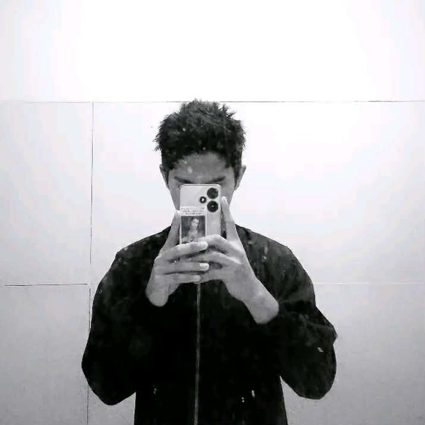
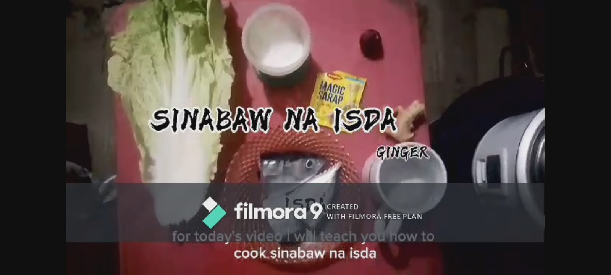
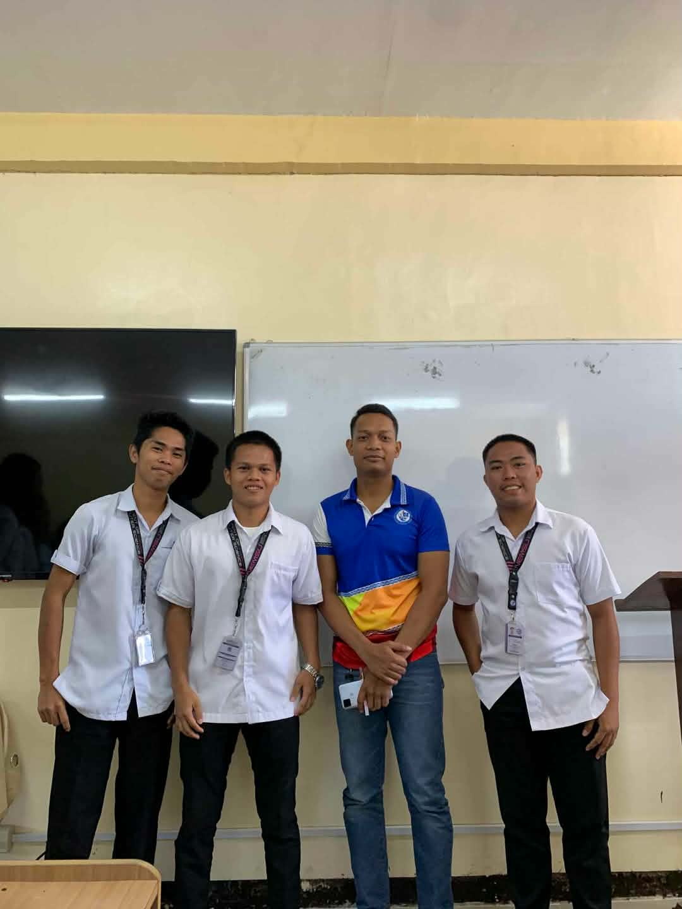
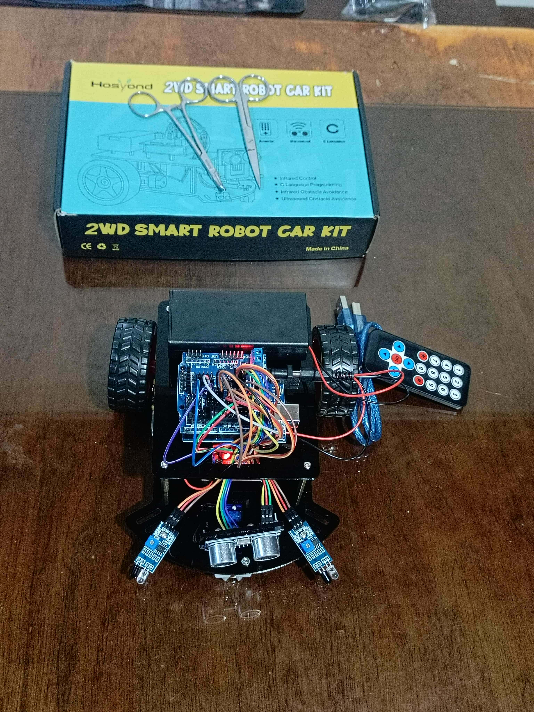
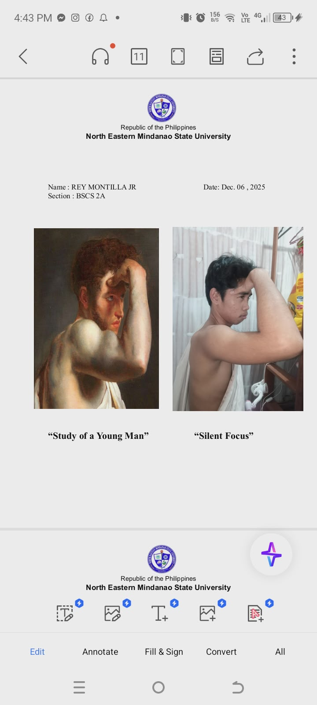
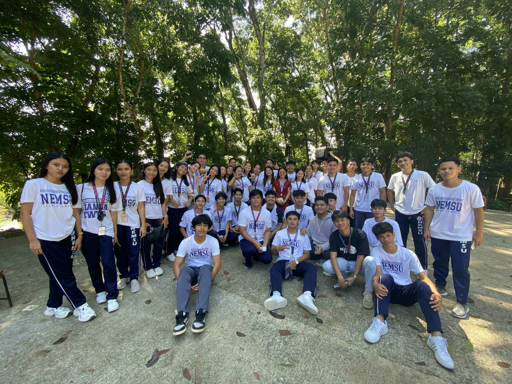
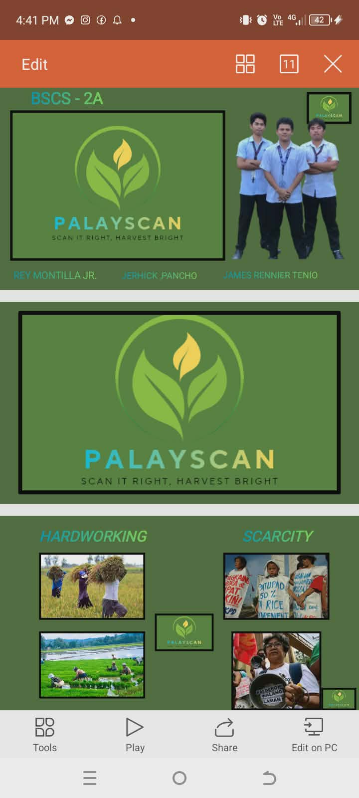

A passionate Computer Science student
I enjoy learning new things about computers and technology.
I believe that hard work and patience are important in reaching my goals.
In the future, I hope to own a computer shop where I can help people with their tech needs.
I keep learning and improving myself step by step.

Multimedia system
Programming
embedded
art app
pathfit
EntrepreuershipEmail:ewayrey470@gmail.com
facebook: Rey Montilla
Instagram : ar_e_way
number: 09490397043